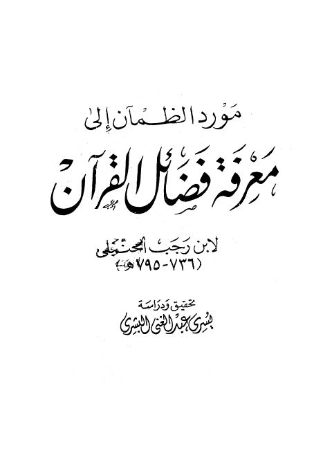

Downloads need an internet connection.
مورد الظمآن إلى معرفة فضائل القرآن
Authors: ابن رجب الحنبلي
Editors: يسري عبد الغني البشري
**▫️ العنوان: مورد الظمآن إلى معرفة فضائل القرآن** ▪️ المؤلف: #ابن_رجب_الحنبلي ▫️ المحقق: #يسري_عبد_الغني_البشري ▪️ الطبعة: 1 ▫️ عدد الأجزاء: 1 ▪️ الصفحات: 96 ▫️ نوع الوعاء: #كتاب ▪️ التصنيف الرئيسي: #التفسير_وعلوم_القرآن ▫️ التصنيف الفرعي: #مباحث_قرآنية_عامة ۪